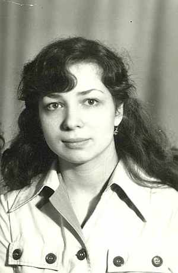
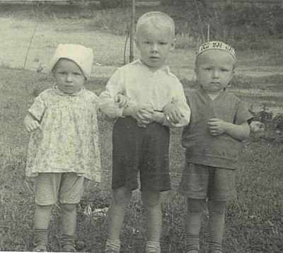
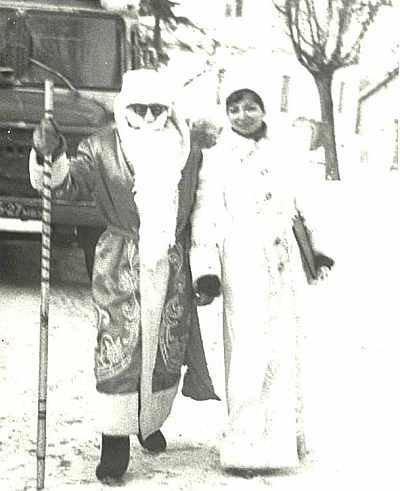

Кравчук (Бахорина) Валентина ИвановнаРодилась 27.06.1962 в г.Щучин, Гродненской обл., Беларусь. окончила Культпросветучилище в г.Гродно, в 1986 вышла за муж за Кравчука Сергея Владимировича, переехали в Гродно, работала в учрееждениях культуры руководителем кружка, библиотекарем, методистом. |

 Валентина, Павел, Николай  с будущим мужем в образе Снегурочки и Деда Мороза, Щучин 1984г.  2014г. |
|
Родители:
Братья/Сестры:
Дети: |